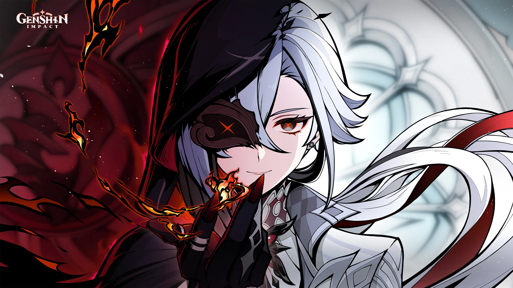

HARBINGER OF THE FATUI
THE KNAVE
"Dunia ini hanyalah sebuah panggung, dan kita semua adalah aktor di dalamnya." — Direktur House of the Hearth. Menguasai elemen Pyro dengan tarian kematian yang elegan.

INFORMASI KARAKTER

ARLECCHINO
★★★★★
Dikenal sebagai "Father" oleh anak-anak di House of the Hearth. Ia memimpin operasi intelijen Fatui di Fontaine. Di balik senyumnya yang tenang, terdapat eksekutor mematikan yang tidak memberikan ampun bagi para pengkhianat.
Elemen
Pyro (Api)
Senjata
Polearm (Scythe)
Afiliasi
Fatui Harbingers
Konstelasi
Ignis Purgatorius
ARSIP MEDIA

Desain Visual

Operasi Fontaine
Rekaman Tempur